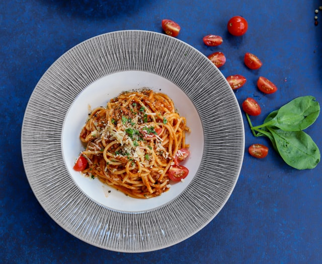

Rustic Spaghetti Recipe

Description
Ah, the classic spaghetti recipe. Many people have their own take on spaghetti, this recipe is a no frills spaghetti that gets all it's flavor from the long simmering sauce. Good sauce is the key to a good spaghetti, and this sauce won't disappoint.
This recipe pairs well with a nice garden or caesar salad and some garlic bread. Try some fresh tiramisu to finish off the night and you'll feel like you are dining at the finest italian restaurant without having to even leave home.
Ingredients:
- 1/2 lb spicy italian sausage get mild italian sausage if you can't handle the heat
- 1/2 lb lean ground beef
- 1/2 small onion, finely chopped
- 2 garlic cloves, minced
- 2 tablespoons extra virgin olive oil
- 15oz tomato sauce
- 15oz can of crushed tomatoes
- 6oz tomato paste
- 1 teaspoon italian seasoning
- 2 teaspoons dried parsley flakes
- 2 teaspons sugar
- 1 teaspoon fennel seeds
- 1 teaspoon salt
- 1 cup of water or beef broth
- 16oz spaghetti noodles
- Salt and pepper for tasting
- finely chopped basil, for serving
- shredded parmesan, for serving
Steps:
- Heat large pot over medium high heat. Add a drizzle of olive oil to pot. Once oil is hot, throw in the onion and garlic and cook until aromatic, about 1 minute. Add in meat and cook until browned. Drain off excess fat.
- Stir in undrained tomatoes, tomato sauce, tomato paste, sugar, italian seasoning, fennel seeds, salt, and 1 tablespoon of olive oil. Stir until well mixed.
- Stir in the water or beef broth. Bring the sauce to a boil, then reduce the heat. Simmer uncovered, stirring occasionally, for 1.5-2 hours until the sauce has come to the desired consistency.
- Cook the spaghetti noodles while the sauce simmers. Add salted water to a large pot and bring to a boil. Once boiling, cook the spaghetti until it is al dente.
- Once the spaghetti is done, drain the noodles and toss in remaining olive oil to prevent sticking. Taste the sauce for flavor and add salt and/or pepper as needed.
- Plate spaghetti and top with sauce, garnish with basil and parmesan cheese.